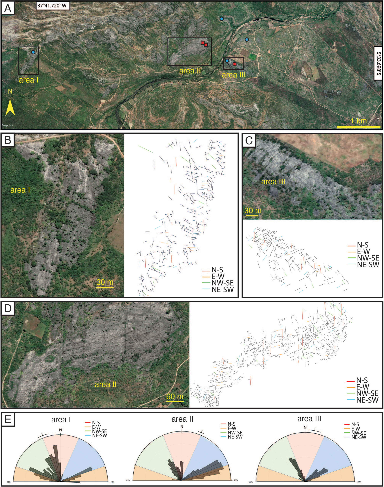

U–Pb ages via LA-ICP-MS of carbonate from brittle structures of Jandaíra formation, Potiguar basin, NE-Brazil

Resumo em Português
A datação U-Pb em carbonatos por LA-ICP-MS está se tornando uma ferramenta popular para investigar o momento da deformação frágil. No Nordeste do Brasil, a datação absoluta da deformação frágil em uma série de bacias intracontinentais relacionadas ao rifte associadas ao Rifte do Atlântico Sul tem sido pouco explorada. Este trabalho contribui para essa temática investigando o preenchimento carbonático e a datação de fraturas/veios no calcário Jandaíra, parte da sequência pós-rifte da Bacia Potiguar. Até o momento, as idades dessas feições (Cretáceo Inferior ao Mioceno Médio) eram inferidas por relações de campo e estudos estratigráficos.Carbonatos anteriormente considerados impossíveis de datar foram datados utilizando uma técnica recente e desafiadora de datação U-Pb por LA-ICP-MS. Os dados obtidos — os primeiros com esse método nessa bacia — indicam que a deformação frágil pós-rifte pode ser delimitada entre 45 e 30 Ma. Esse intervalo é coincidente com um importante evento magmático (Macau-Messejana), sugerindo uma relação causal entre magmatismo e deformação frágil, embora a origem do campo de tensões associado a esse evento tectono-magmático permaneça em debate. O trabalho valida o uso da datação U-Pb em carbonatos e sua aplicação para a datação da deformação frágil em bacias relacionadas ao rifte no Nordeste do Brasil.